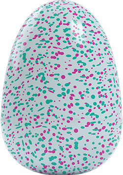

Draggles

Owlicorns

Pengualas

Kanske har du inte hört talas om Hatchimals ännu, vilket inte är så konstigt.. allt kring Hatchimals har varit hemligt. Inom leksaksbranschen är däremot detta en bomb! Förväntningen är att Hatchimals kommer bli en succé, sälja slut och bli årets julklapp 2016.
Hatchimals är en ny, mycket innovativ och den mest roliga leksaken 2016. Nästan ingen information fanns tillgänglig om Hatchimals innan den lanserades på New York Toy Fair 2016, där den blev omedelbar succé och fick folk att häpna.
Trots allt prat om Hatchimals så är det en otrolig mystik kring dem. Sedan lanseringen den 7 oktober 2016 har de barn som fått dem blivit helt upptagna av sin Hatchimal som är en modern och roligare variant av Tamagochi.
Hatchimal förväntas bli årets julklapp 2016 samt årets leksak 2016. Varför den förväntas bli årets leksak är på grund av mystiken kring den, att ditt barn kommer få en ny kompis och att barn lär sig ta ansvar och omvårdnad.
Det finns flera butiker som säljer Hatchimals i både Sverige och internationellt.
För närvarande kan man endast köpa Hatchimals från BR Leksaker samt från Toys'R'us i Sverige.
I Stockholm, Göteborg och Malmö finns flera fysiska butiker men båda kedjorna har även webbshoppar där man kan köpa sin Hatchimal.
Hitta BR butiker Hitta Toys'R'us butikerÄr du sugen på att köpa Hatchimals från en internationell butik så är det inte billigare. Amazon säljer dem för 59,99$ medan de i sverige kostar runt 549SEK. Därför är det enklare att köpa dem i Sverige då du får betydligt enklare retur, ångerrätt och garanti.